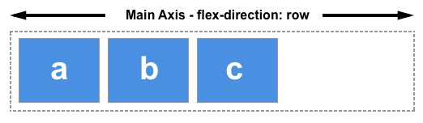
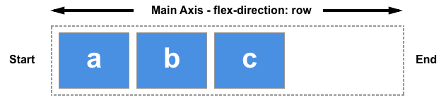

Flexbox
El Módulo de Caja Flexible, comúnmente llamado flexbox, fue diseñado como un modelo unidimensional de layout, y como un método que pueda ayudar a distribuir el espacio entre los ítems de una interfaz y mejorar las capacidades de alineación.
Cuando describimos a flexbox como unidimensional destacamos el hecho que flexbox maneja el layout en una sola dimensión a la vez — ya sea como fila o como columna. Esto contrasta con el modelo bidimensional del Grid Layout de CSS, el cual controla columnas y filas a la vez.




Listas
Las listas en HTML nos permite crear conjuntos de elementos en forma de lista dentro de una página, todos los cuales irán precedidos, generalmente, por un guión o número.
Los tipos de listas en HTML son los siguientes:
- Listas ordenadas
- Listas desordenadas
- Listas de definiciones
Enlaces
Los hipervínculos nos permiten vincular documentos a otros documentos o recursos, vincular a partes específicas de documentos o hacer que las aplicaciones estén disponibles en una dirección web. Prácticamente cualquier contenido web se puede convertir en un enlace que, al pulsarlo (activarlo), dirija el navegador a la dirección web a la que apunta el enlace (URL).